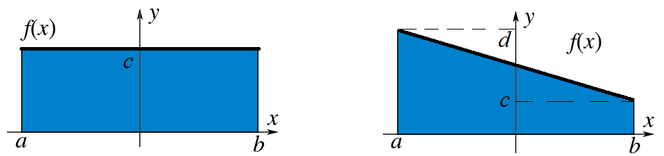
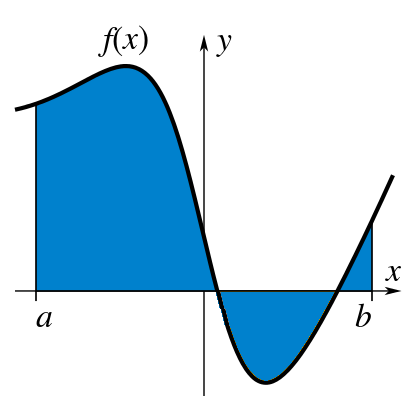
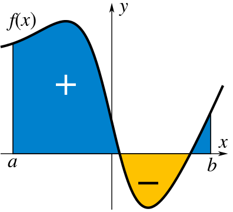
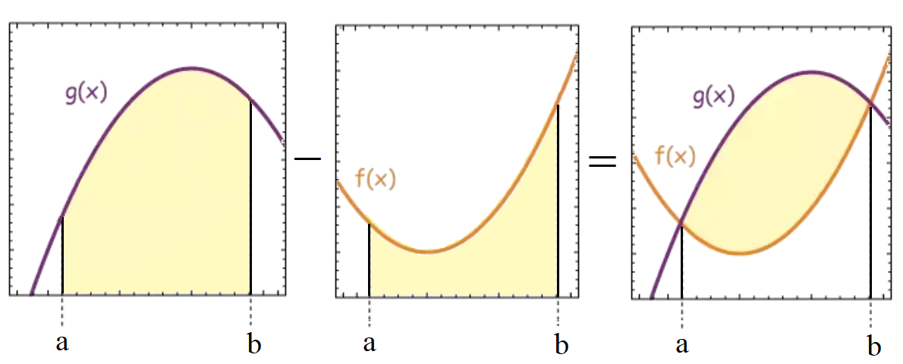
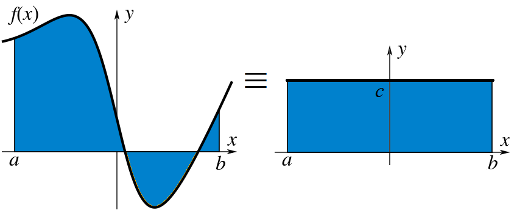

Areas and Integration#
Definition of Integration#
Let’s start with a function \( f(x) \), suppose we are interested in finding the area between the \( x \) axis and the function? If the function is constant or at least linear, this is fairly straightforward:

If the function is more complicated, say a polynomial, then we can break up the function interval \( x \in [a,\,b] \) into small rectangular segments and then sum them all up:


Clearly, this is just an estimate of the function area, although we can improve this estimate by chopping up the interval into smaller segments:

If we break up \( [a,\,b] \) into \( N \) intervals, of uniform width \( \Delta x \):
then over the interval sliced up into \( N \) pieces:
The total area under the function is:
We can now take the limit of \( \Delta x \rightarrow 0 \) to get an infinitesimal \( \mathrm{d}x \), so we can go from summing up small finite areas to infinitesimal areas:
We call this quantity the Definite Integral of the function \( f(x) \) between the limits \( [a,\,b] \), and the symbol \( \int \) is known as the Integration Operator. The function \( f(x) \) here is also called the Integrand and the process of finding an integral is known as Integration. If we want to work out the value of an integral without specific limits, this turns out to be a well-understood mathematical process too, known as finding the Indefinite Integral:
where \( C \) is a constant. This process is called finding the Anti-Derivative and knowing a function’s anti-derivative means we can find the value of a function’s definite integral:
This statement is known as The Fundamental Theorem of Calculus.
An example: Find \( \int_0^1 x\,\mathrm{d}x \):
First, we have to split up the interval, and \( f(x) \), into \( N \) equally spaced sections:
We can also switch limits from \( \Delta x \rightarrow 0 \) to \( N \rightarrow \infty \):
where we have used the expression for the sum: \( \sum_{i=1}^N i = \frac{1}{2}N(N+1) \).
We can apply what we know about differentiation to reverse the process to evaluate common integrals, for instance, if we know that:
Since \(\frac{\mathrm{d}}{\mathrm{d}x}\big(x^0\big) = 0\), indefinite integrals must include a constant:
Signed and Unsigned Areas#
The value of the definite integral \(\int_a^b f(x)\,\mathrm{d}x\) is the area between the function and the \(x\) axis over the interval \([a,\,b]\) and it turns out the value of this integral is signed:

Areas above the \(x\) axis produce a positive value of the integral and areas below the \(x\) axis produce a negative value of the integral. The unsigned area is given by:
An example:
Limits#
The limits of a definite integral can be swapped around, introducing a minus sign, this is equivalent to evaluating the integral the opposite way round:
An example:
Area Between Curves#
Suppose we have two functions, we can find the area between the two curves by subtracting the two integrals:

which is written as:
where \(g(x)\) is the upper curve and \(f(x)\) is the lower curve. If the area between the curves is above the \(x\) axis, then this is area should be positive and if we find a negative answer, then we have switched the order of the curves.
Mean Value of a Function#
For a function, \(f(x)\), being integrated over a range \([a,\,b]\), is it possible to find a constant function which would have the same area over that range?

Common Anti-Derivatives#
Polynomial#
\( f'(x) \) |
\( f(x) \) |
|---|---|
\( a \) |
\( 0 \) |
\( a x^n \) |
\( \frac{a x^{n+1}}{n+1} \) |
\( (ax+b)^n \) |
\( \frac{1}{a} \frac{(ax+b)^{n+1}}{n+1} \) |
\( \frac{a}{x} \) |
\( a\ln(x) \) |
\( \frac{1}{ax+b} \) |
\( \frac{1}{a}\ln(ax+b) \) |
Trigonometric#
\( f'(x) \) |
\( f(x) \) |
|---|---|
\( \sin(x) \) |
\( -\cos(x) \) |
\( \sin(ax+b) \) |
\( -\frac{1}{a}\cos(ax+b) \) |
\( \cos(x) \) |
\( \sin(x) \) |
\( \cos(ax+b) \) |
\( \frac{1}{a}\sin(ax+b) \) |
\( \sec^2(x) \) |
\( \tan(x) \) |
\( \sec(x)\,\tan(x) \) |
\( \sec(x) \) |
\( \csc(x)\,\cot(x) \) |
\( -\csc(x) \) |
\( \csc^2(x) \) |
\( -\cot(x) \) |
Exponential#
\( f'(x) \) |
\( f(x) \) |
|---|---|
\( ae^x \) |
\( ae^x \) |
\( e^{ax+b} \) |
\( \frac{1}{a}e^{ax+b} \) |
\( a^x \) |
\( \frac{a^x}{\ln(a)} \) |
Hyperbolic#
\( f'(x) \) |
\( f(x) \) |
|---|---|
\( \sinh(x) \) |
\( \cosh(x) \) |
\( \sinh(ax+b) \) |
\( \frac{1}{a}\cosh(ax+b) \) |
\( \cosh(x) \) |
\( \sinh(x) \) |
\( \cosh(ax+b) \) |
\( \frac{1}{a}\sinh(ax+b) \) |
\( \mathrm{sech}^2(x) \) |
\( \tanh(x) \) |
\( \mathrm{sech}(x)\,\tanh(x) \) |
\( -\mathrm{sech}(x) \) |
\( \mathrm{cosech}(x)\,\cot(x) \) |
\( -\mathrm{cosech}(x) \) |
\( \mathrm{cosech}^2(x) \) |
\( -\coth(x) \) |
Inverse Trigonometric#
\( f'(x) \) |
\( f(x) \) |
|---|---|
\( \frac{1}{\sqrt{a^2 - x^2}} \) |
\( \arcsin\left(\frac{x}{a}\right) \) |
\( -\frac{1}{\sqrt{a^2 - x^2}} \) |
\( \arccos\left(\frac{x}{a}\right) \) |
\( \frac{1}{a^2 + x^2} \) |
\( \frac{1}{a}\arctan\left(\frac{x}{a}\right) \) |
Inverse Hyperbolic#
\( f'(x) \) |
\( f(x) \) |
|---|---|
\( \frac{1}{\sqrt{x^2 + a^2}} \) |
\( \textrm{arsinh}\left(\frac{x}{a}\right) \) |
\( \frac{1}{\sqrt{x^2 - a^2}} \) |
\( \textrm{arcosh}\left(\frac{x}{a}\right) \) |
\( \frac{1}{a^2 - x^2} \) |
\( \textrm{artanh}\left(\frac{x}{a}\right) \) |
Integration by Parts#
Recall the product rule:
We can rearrange this and integrate w.r.t. \(x\):
By the fundamental theorem of calculus, the first term on the RHS becomes simplified:
Sometimes this form of an integral allows us to make progress in solving a problem, because the term \(\int f(x)\,g'(x)\,\mathrm{d}x\) may be easier to integrate than \(\int f'(x) \,g(x) \,\mathrm{d}x\).
An example:
Firstly we need to split it up into \(f'\) and \(g\):
Given the form of a particular integration, how do we know which function to pick for \(f'(x)\) and which for \(g(x)\)? A simple way is to use the mnemonic LATE:
Logarithmic Term
Algebraic Term
Trigonometric Term
Exponential Term
This list tells the order of preference for the term to be differentiated – \(g(x) \rightarrow g'(x)\). The exponential function is at the bottom because it is usually the easiest to integrate, while the logarithmic term is usually the hardest.
An example, integrate:
Since L falls before A in LATE, we pick:
And so integrating by parts we find:
What about definite integrals? Same story but with limits:
Sometimes it is not always obvious that there are two functions in the integration expression. However, this can be remedied using a simple trick.
An example:
This should be seen as:
Since we have both L and A from LATE, we pick:
Integration Techniques#
Chain Rule in Reverse 1.
\[I = \int [f(x)]^n\,f'(x)\,\mathrm{d}x = \frac{\left[f(x)\right]^{n+1}}{n+1} + C\]An example:
\[\begin{split}I_1 = \int \sin^2(x)\cos(x)\,\mathrm{d}x \\ f(x) = \sin(x) \Rightarrow f'(x) = \cos(x) \\ I_1 = \frac{1}{3}\sin^3(x) + C\end{split}\]\[I = \int \frac{f'(x)}{f(x)}\,\mathrm{d}x = \ln(f(x)) + C\]An example:
\[\begin{split}I_2 = \int \frac{x}{3x^2 + 7}\,\mathrm{d}x \\ f(x) = 3x^2 + 7 \Rightarrow f'(x) = 6x \\ I_2 = \frac{1}{6} \int \frac{6x}{3x^2 + 7}\,\mathrm{d}x = \frac{1}{6} \ln(3x^2 + 7) + C\end{split}\]A trigonometric example:
\[\begin{split}I_3 = \int \tan(x)\,\mathrm{d}x = \int \frac{\sin(x)}{\cos(x)}\,\mathrm{d}x\\ f(x) = \cos(x) \Rightarrow f'(x) = - \sin(x)\\ I_3 = -\int \frac{-\sin(x)}{\cos(x)}\,\mathrm{d}x = - \ln(\cos(x)) + C \end{split}\]\[I = \int f'(x) e^{f(x)}\,\mathrm{d}x = e^{f(x)} + C\]An example:
\[\begin{split}I_4 = \int \cos(x) \,e^{\sin(x)}\,\mathrm{d}x\\ f(x) = \sin(x) \Rightarrow f'(x) = \cos(x) \\ I_4 = e^{\sin(x)} + C \end{split}\]Integrating Twice
Consider the following integral:
this is a good candidate to integrate by parts, we have T and E in LIATE:
This does not appear to be any easier to work out! However, if we integrate by parts again:
It appears we still have not simplified the problem, but now look at the last term:
and so we see by integrating twice, the integral has been solved.